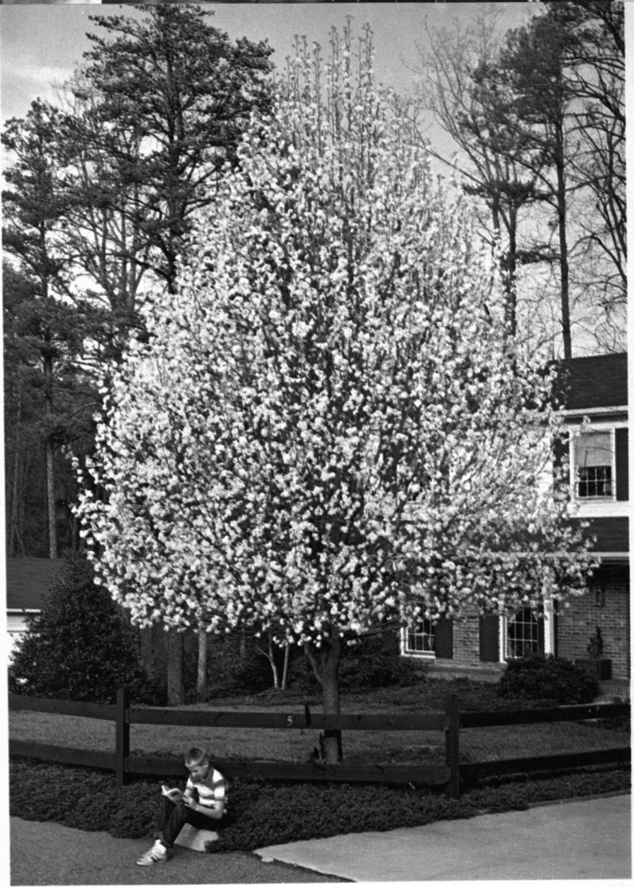
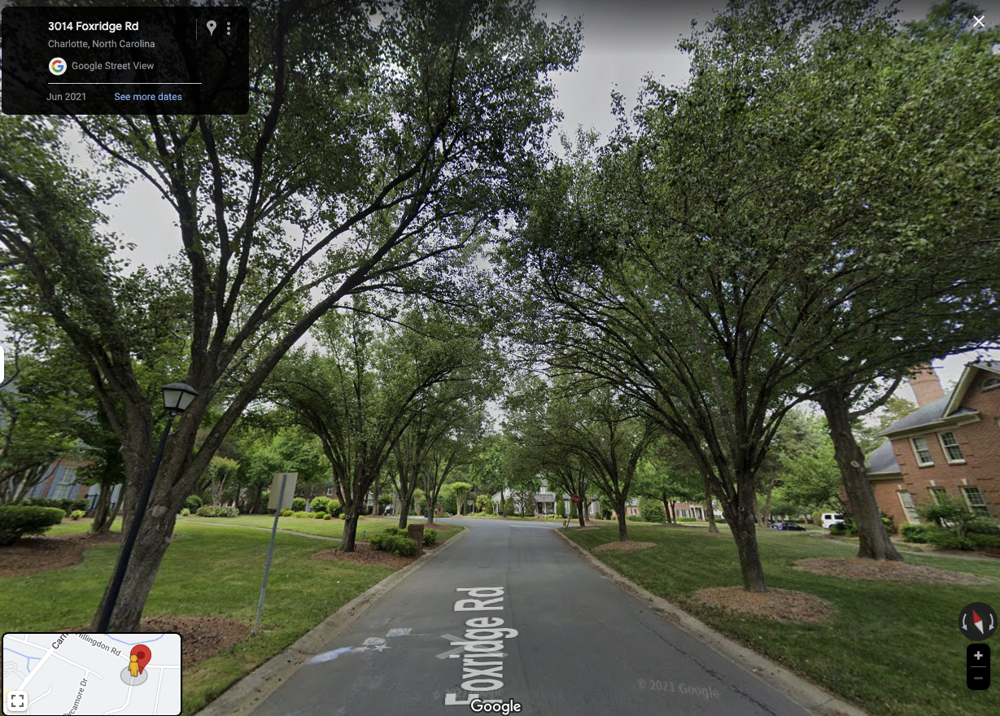

Ornamental Pear Tree Density in Charlotte, NC
This map shows the density of ornamental pears (P. Calleryana, most commonly known as the Bradford pear) alongside US Census demographic data on white racial homogeneity by tract for the years 1990, 2000, and 2010.
An image from Southern Living magazine (1981) shows a suburban home with a blooming Bradford pear tree in front.
Given the historical, regional relationships between the pear and suburban development, and white flight and the suburbs:
Does white racial homogeneity in Charlotte's neighborhoods have any relationship to the density of ornamental pears?
The heatmap visualizes the 9,823 ornamental pear trees recorded in Charlotte's official Tree Canopy Inventory which represents city tree records from the years 2003-2018.Background
Bradford ornamental pear trees were incredibly popular in the southern region in the 70s-90s (see table below). They were commonly planted en masse in subdivision developments. Charlotte, NC was a paradigmatic example of post-war southern sunbelt growth during this time period. Suburbanization was concomitatnt with this economic growth, and provided the destination for a white "suburban secession" (Lassiter and Kruse, 2009). Like elsewhere in the country, the FHA promoted suburban housing development and access to mortgages for white people and sanctioned overt racial discrimination in housing in the South through the 1960’s. Although the 1968 federal Fair Housing Act, and the HUD act passed a few months later, granted Black citizens “access to the same kinds of generous benefits and subsidies that had created tens of millions of white homeowners in the post-World War II era– ” suburban communities remained segregated and majority white (Taylor, 2021; n.p). During this time of suburbanization and school desegregation in the South, “the priorities of white-collar suburbs supplanted the traditional culture of white supremacy that governed the Jim Crow era” wrote historian Matthew Lassiter (Lassiter, 2006; p.3). Not only did white suburbanization represent a chance to accumulate wealth based on racialized property values, but white flight represented a “politics of suburban succession” as a means to resist “the civil rights revolution" (Lasssiter and Kruse, 2009; p. 696).This map poses the question of whether white racial homogeneity in Charlotte's neighborhoods has any relationship to the density of ornamental pears, given the relationships between the pear and suburban development, and white flight and the suburbs. The heatmap visualizes the 9,823 ornamental pear trees recorded in Charlotte's official Tree Canopy Inventory which represents city tree records from the years 2003-2018.
| Year | Southern Bradford Pear Ranking | National Bradford Pear Ranking |
|---|---|---|
| 1980 | 2 | 5 |
| 1983 | 1 | 3 |
| 1986 | 1 | 1 |
Information in this table sourced from Nowak & Sydnor, 1992.

An image from Google Street View shows a suburban street lined with ornamental pears along Foxbridge Road in Charlotte.
Sources:
- Lassiter, M. D., & Kruse, K. M. (2009). The Bulldozer Revolution: Suburbs and Southern History since World War II. The Journal of Southern History, 75(3), 691–706.
- Taylor, K.-Y. (2019). Race for profit: How banks and the real estate industry undermined black homeownership. The University of North Carolina Press.
About the data
Tree data visualized in this map comes from Charlotte's official
urban canopy inventory.
Decennial census data comes from the City
of Charlotte Open
Data Portal.
Links to download data here and here.
About the map
This map uses Leaflet.js, chroma.js and the leaflet.heat plugin to create a density heatmap of point data. The web page uses Bootstrap for responsive design.
Map authored by RL Martens for NMP:673 at the University of Kentucky in May of 2023.
Links: Github | GIS Portfolio